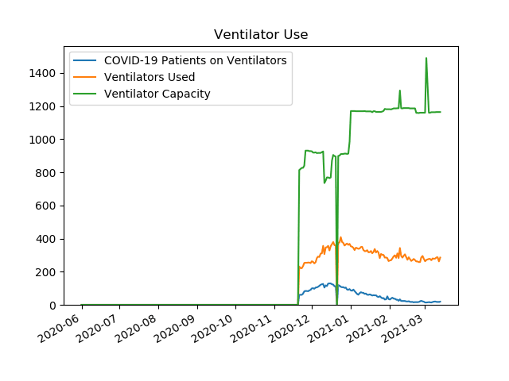
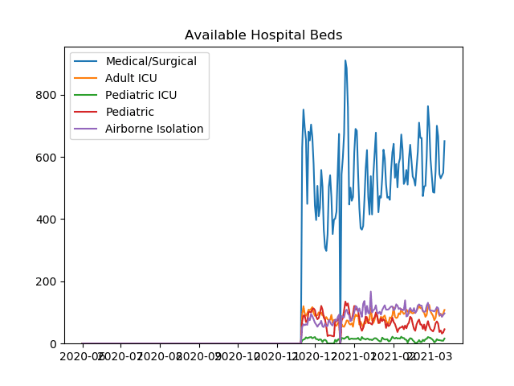
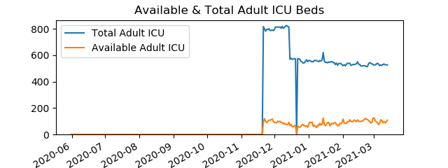
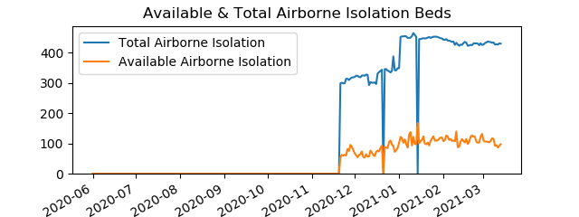
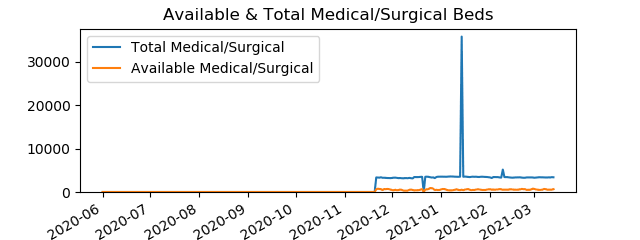
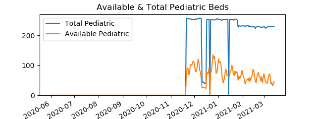
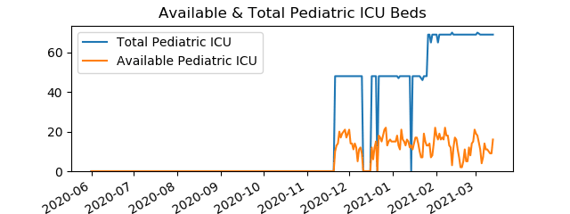

| Date | COVID-19 Patients Hospitalized | COVID-19 Patients on Ventilators | COVID-19 Adult Patients in ICU |
| 20201121 | 410 | 61 | 172 |
| 20201201 | 626 | 99 | 181 |
| 20210101 | 697 | 87 | 238 |
| 20210201 | 313 | 32 | 75 |
| 20210218 | 220 | 17 | 56 |

Data is from PA Dept Of Health
| |
|  |
|  |
|  |
|  |
|  |
|  |
|  |